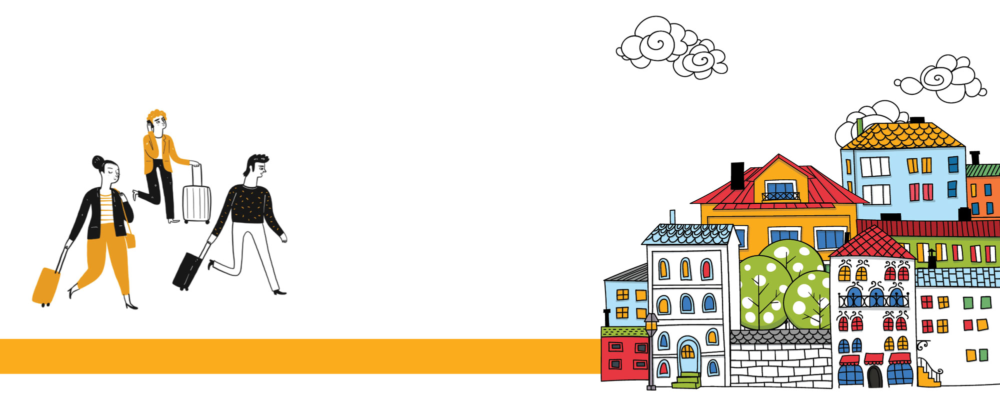
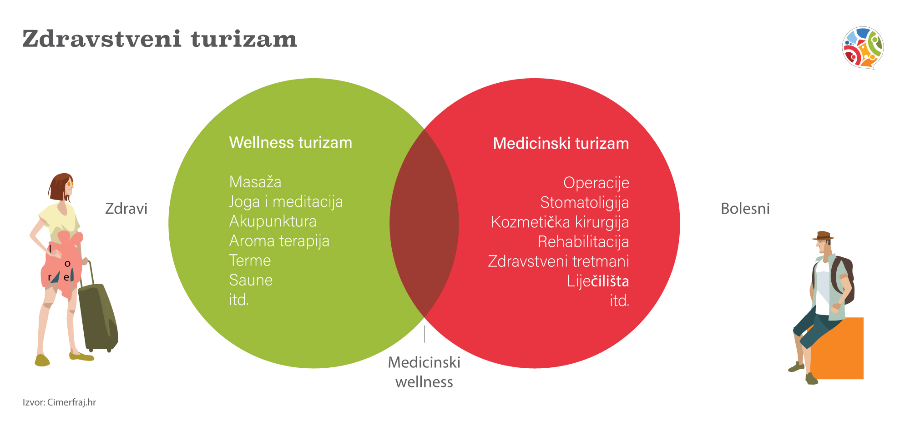

Novosti
NOVA FAZA DIGITALIZACIJE
Irundo, jedna od vodećih domaćih property management agencija, ovaj je tjedan potpisala ugovor o suradnji s domaćom IT tvrtkom Rentlio.
Više...

Turizam 2021. u brojkama - drukčija očekivanja gostiju i planovi za putovanja u 2022. godini
Lakoća putovanja u inat ograničenjima i strahovima je mjerljiva. Znamo koliko je bilo gostiju, gdje su najradije putovali, čega se boje, što najviše žele i kakvi su im planovi za 2022. godinu.
Više...
Skuplje ćemo plaćati komunalne usluge, a rast će i paušali za privatne iznajmljivače od 2022.
Privatni iznajmljivači, kao "nekućanstva" u novom Zakonu o gospodarenju otpadom, bi mogli plaćati višestruko više naknade za komunalne usluge, nego do sada, a neka nadležna tijela najavila i rast paušala poreza na dohodak i turističke pristojbe.
Više...

Zašto wellness turizam nije rezerviran samo za hotele i kako nam može donijeti rezervacije izvan sezone
Wellness turizam je sve popularniji, a današnji wellness turisti ne traže univerzalne hotelske pakete, već različite prilike za opuštanje, brigu o svom zdravlju i uživanje u rekreativnim aktivnostima u destinaciji.
Više...

Ovisi li budućnost hrvatskog turizma o manjim mjestima i nepoznatim destinacijama?
Svi uključeni u hrvatski turizam mogu zadovoljno trljati ruke ove godine. Naime, Hrvatska je unatoč problemima s Covidom, bila jedna od najposjećenijih destinacija na Mediteranu, ali i općenito u Europi. No, želje i potrebe turista su se u Covid-godinama uvelike promijenile – i pitanje je treba li se i hrvatski turizam sada značajno promijeniti?
Više...